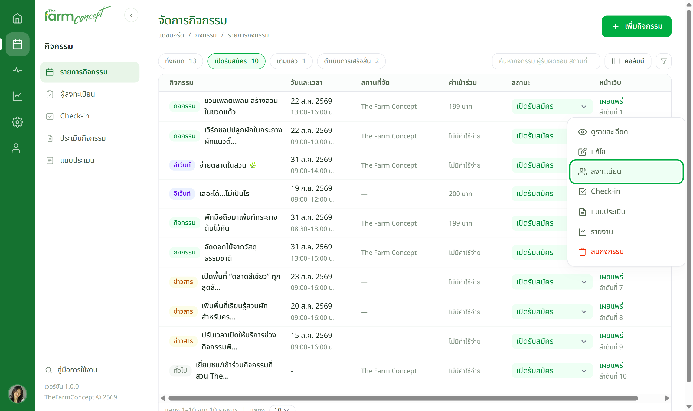
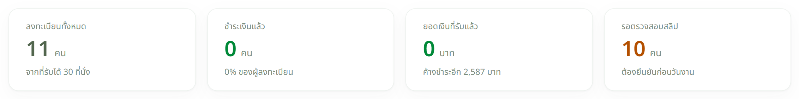
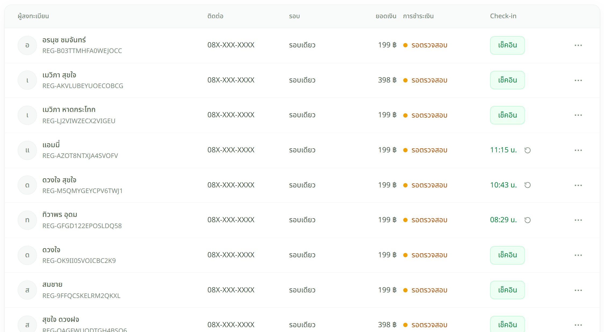
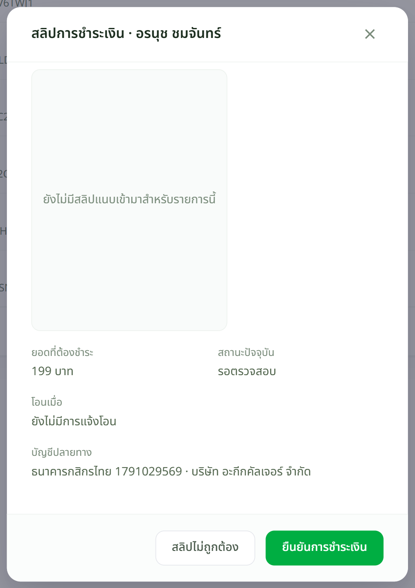

เจ้าหน้าที่
เปิดหน้ารายชื่อ




ต้องการรายชื่อไปทำงานต่อ กด ส่งออก Excel มุมขวาบน — ได้เฉพาะรายการที่กรองอยู่ตอนนั้น
สถานะการชำระเงินหมายถึงอะไร
| สถานะ | หมายความว่า |
|---|---|
| รอตรวจสอบ | ผู้เข้าร่วมแจ้งโอนแล้ว รอเจ้าหน้าที่เปิดสลิปดู |
| ชำระแล้ว | เจ้าหน้าที่กด "ยืนยันการชำระเงิน" แล้ว |
| สลิปไม่ถูกต้อง | ยอดหรือสลิปไม่ตรง — ต้องติดต่อผู้เข้าร่วมให้ส่งใหม่ |
| ไม่มีค่าใช้จ่าย | กิจกรรมฟรี ไม่ต้องตรวจอะไร |
เจอปัญหาให้ทำอย่างไร
| อาการ | ให้ทำ |
|---|---|
| ไม่มีสลิปให้ดู | ผู้เข้าร่วมยังไม่ได้แนบ — ติดต่อให้ส่งเข้ามา หรือเปลี่ยนสถานะเองหลังตรวจยอดจากธนาคาร |
| โอนมาแล้วแต่ยังขึ้นรอตรวจสอบ | ปกติ — ระบบไม่ตัดยอดอัตโนมัติ ต้องมีคนกดยืนยัน |
| ยอดในสลิปไม่ตรง | กด "สลิปไม่ถูกต้อง" แล้วติดต่อผู้เข้าร่วม ระบบจะเปลี่ยนสถานะให้เห็นชัด |
| มีคนจองซ้ำสองรายการ | ยืนยันรายการที่ถูกต้อง แล้วปล่อยอีกรายการไว้ — ยอดเช็กอินนับตามคนที่มาจริง |